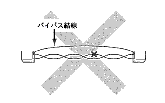

reference)
reference)Control system CAN communication system notes |
reference)After soldering the repair part, tape winding.
|  |
There is no bypass connection at the restoration site.
 |
Conduct inspection is basically performed by applying a tester from the back of the connector.
Use a repair wire if you cannot apply the tester from the back of the connector.
| Part | Repair wire part number |
|---|---|
| Brake actuator ASSY (VSC ECU) Vehicle harness connector | 82998-24360 |
| Brake actuator ASSY (VSC ECU) Body connector | 82998-24250 |
| York -rated sensor (yaw G sensor) Vehicle harness connector | 82998-12670 |
| DLC3 | Diagnowship check wire No.2 (09843-18040) |